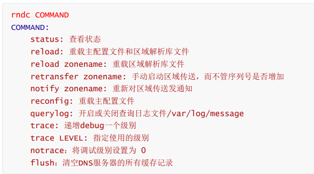

域名系统DNS服务
1.名字解析介绍和DNS 当前TCP/IP网络中的设备之间进行通信，是利用和依赖于IP地址实现的，但IP地址是很难记忆的。当网络设备众多，想要记住每个设备对应的IP，可以说是“不可能完成的任务”。那么如何解决这个问题？我们可以给每个网络设备起一个友好的名称，如：www.baidu.com，这种由文字组成的名称，显而易见要更容易记忆。但是计算机不认识这种名称，我们可以利用一种名字解析服务将名称转化成IP地址。从而我们就可以利用名称来直接访问网络中设备了。除此之外还有一个重要功能，利用名称解析服务可以实现主机和IP的解耦（解除绑定），即：当主机IP变化时，只需要修改名称服务即可，用户仍然可以通过原有的名称进行访问而不受影响。
如下面所述：
本地名称解析配置文件：hosts
Linux：/etc/hosts# 格式
DNS：Domain Name System 域名系统应用层协议，是互联网的一项服务。他作为将域名和IP地址相互映射的一个分布式数据库，能够使人更方便地访问互联网，基于C/S架构，服务端：53/udp，53/tcp
BIND：Bekerly Internet Name Domain，由ISC （www.isc.org）提供的DNS软件实现DNS域名结构
根域：全球根服务器节点只有13个，10在美国，1个在荷兰，一个瑞典，一个日本
一级域名：Top Level Domain：tld
三类：组织域、国家域（.cn, .ca, gk, .tw）、反向域
com，edu，mil，gov，net，org，int，arpa
二级域名：magedu.com
三级域名：study.magedu.com
最多可达到127级域名
1.2 DNS服务工作原理
1.3 DNS查询类型 1 https://help.aliyun.com/document_detail/102237.html
递归查询：
是指DNS服务器在收到用户发起的请求时，必须向用户返回一个准确的查询结果。如果DNS服务器本地没有存储与之对应的信息，则该服务器需要询问其他服务器，并将返回的查询结果提交给用户。
一般来说，由客户机发起的和本地DNS服务器之间属于递归查询，即当客户机向DNS服务器发出请求后，若DNS服务器本身不能解析，则会向其他的DNS服务器发出查询请求，得到最终的肯定或否定的结果后转交给客户机。此查询的源和目标保持不变，为了查询结果客户机只需要发起一次查询。
递归算法：客户端向LocalDNS发起域名查询–>localDNS不知道对应域名的IP–>但他知道谁知道–>他代为帮客户端去询问其他DNS服务器–>最后返回最终结果
迭代查询：
是指DNS服务器在收到用户发起的请求时，并不直接回复查询结果，而是返回给用户另一台DNS服务器的地址，用户再向这台DNS服务器提交请求，这样依次反复，直到返回查询结果。
一般情况下，本地的DNS服务器向其他DNS服务器的查询属于迭代查询，如：若对方不能放回权威的结果，则会向下一个DNS服务器（参考前一个DNS服务器返回的结果）再次发起进行查询，直到返回查询的结果为止。此查询的源不变，但查询的目标不断变化，为了查询到结果一般需要发起多次查询
迭代算法：客户端向LocalDNS发起域名查询–>localDNS不知道对应域名的IP–>但他知道谁知道并推荐客户端应该找谁–>客户端自己去找它
DNS缓存
DNS缓存是将解析数据存储在靠近发起请求的客户端的位置，也可以说DNS数据是可以缓存在任意位置，最终目的是以此减少递归查询过程，可以更快的让用户获得请求结果。
1.4 名称服务器 Name Server，域内负责解析本域内的名称的DNS服务器
1.5 解析类型
1.6 完整的查询请求经过的流程 1 client -->hosts文件--> client DNS service local cache --> DNS server (recursion递归) --> DNS Server cache -->DNS iteration(迭代) --> 根 -->顶级域名DNS --> 二级域名DNS
2 DNS服务相关概念和技术 2.1 DNS服务器的类型
2.1.1 主DNS服务器 管理和维护所负责解析的域内解析库的服务器
2.1.2 从DNS服务器 从主服务器或从服务器“复制” （区域传输）解析库副本
序列号：解析库版本号，主服务器解析库变化时，其序列号递增
刷新时间间隔：从服务器从主服务器请求同步解析的时间间隔
重试时间间隔：从服务器请求同步失败时，再次尝试时间间隔
过期时长：从服务器练习不到主服务器时，多久后停止服务
通知机制：主服务器解析库发生变化时，会主动通知从服务器
2.2 区域传输
完全传输：传送整个解析库
增量传输：传递解析库变化的那部分内容
2.3 解析形式
2.4 负责本地域名的正向和反向解析库
2.5 解析答案
肯定答案：存在对应的查询结果
否定答案：请求的条目不存在等原因导致无法返回结果
权威答案：直接由存有此查询结果的DNS服务器（权威 服务器）返回的答案
非权威答案：由其他非权威服务器返回的查询答案
2.6 各种资源记录 区域解析库：由众多资源记录RP（resource record）组成
记录类型：A ，AAAA, PTR, SOA, NS, CNAME,MX
SOA：Start of authority，起始授权记录；一个区域解析库有且仅能有一个SOA记录，必须位于解析库的第一条记录
A：IPv4地址，作用FQDN –>IP
AAAA：FQDN –>IPv6
PTR：poinTeR ，IP –>FQDN
NS: Name Server，专用于标明当前区域的DNS服务器
CNAME：Canonical Name，别名记录
MX，mail exchanger，邮件交换服务器
TXT：对域名进行标识和说明的一种方式，一般做验证记录时会使用此项，如：SPF（反垃圾邮件）记录，https验证等
2.6.1 资源记录定义 1 name [TTL] IN rr_type value
注意：
TTL可以全局继承，写在首行即可
使用”@“符号可用于引用当前区域的域名
同一个名字可以通过多条记录定义多个不同的值；此时DNS服务器会以轮询方式响应
同一个值也可能有多个不同的定义名字；通过多个不同的名字指向同一个值进行定义；此仅表示通过多个不同的名字可以找到同一个主机
面试题：
1 2 3 4 1. 我的网站域名需要更改，如何使其更快的生效？
2.6.2 SOA记录 name: 当前区域的名字，例如”magedu.org“
value：由多部分组成
注意：
当前区域的主DNS服务器和FQDN，也可以使用当前区域的名字，只是注释功能，可以不需要配置对应的NS记录和A记录
当前区域管理员的邮箱地址；但地址中不能使用@符号，一般可以用.替换，例如：admin.magedu.org
主从服务区域传输相关定义以及否定的答案的统一TTL
范例：
1 2 3 4 5 6 7 magedu.org. 86400 IN SOA ns.magedu.org. nsadmin.magedu.org. (
2.6.3 NS记录 name：当前区域的名字
value：当前区域的某个DNS服务器的名字，例如：ns.magedu.org.
注意：
相邻的两个资源记录的name相同时，后续的可省略
对NS记录而言，任何一个ns记录后面的服务器名字，都应该在后续有一个A记录
一个区域可以有多个NS记录
范例：
1 2 magedu.org IN NS ns1.magedu.org.
2.6.4 MX记录 name：当前区域的名字
value：当前区域的某邮件服务器（smtp）的主机名
注意：
一个区域内，MX记录可以有多个；但每个记录的value之前应该有一个数字（0-99），表示此服务器的优先级；数字越小优先级越高
对MX记录而言，任何一个MX记录后面的服务器名字，都应该在后续有一个A记录
范例：
1 2 3 4 magedu.org. IN MX 10 mx1.magedu.org.
2.6.5 A记录 name: 某主机的FQDN，例如：www.magedu.org .
value: 主机名对应主机的IP地址
避免用户写错名称时给错误答案，可以通过泛域名解析至某特定地址
范例：
1 2 3 4 5 6 7 8 9 www.magedu.org. IN A 1.11.1.1
2.6.6 AAAA 2.6.7 PTR 1 name： IP， 有特定格式，把IP地址反过来写，1.2.3.4，要写4.3.2.1:而有特定后缀：in-addr.arpa.,所以完整写法为：4.3.2.1.in-addr.arpa.
注意：网络地址及后缀可省略；主机地址依然需要反着写
例如：
1 2 3 4.3.2.1.in-addr.arpa. IN PTR www.magedu.org.# 如1.2.3为网络地址，可简写成：
2.6.8 CNAME别名记录 1 2 name；别名的FQDN
例如：
1 www.magedu.org. IN CNAME websrv.magedu.org.
2.7 子域名授权 每个域的名称服务器，都是通过其上级名称服务器在解析库进行授权，类似根域授权tld
glue record：粘合记录，父域授权子域的记录
范例：
1 2 3 4 5 6 7 8 9 10 11 .com. IN NS ns1.com.# magedu.org. 在.com的名称服务器上，解析库中添加资源记录
2.8 互联网域名 注册之后，用自己专用的服务来解析
管理后台：把NS记录指向的服务器名称，和A记录指向的服务器地址
2.9 whois 范例：whois查询域名信息
1 2 3 4 5 6 7 8 9 10 11 12 13 14 15 16 17 18 [20:08:03 root@localhost ~]#yum -y install whois
从网站查询，连接：
https://www.toolnb.com/domaininfo/wangxiaochun.com.html
2.10 HttpDNS 略
3 DNS软件bind DNS服务器软件：bind，powerdns，dnsmasq，unbound，coredns
3.1 BIND yum list all bind*
bind：服务器
bind-utils：客户端
bind-libs：相关库，依赖关系自动安装
bind-chroot：安全包
范例：安装bind软件
1 2 [20:24:45 root@localhost ~]#yum -y install bind bind-utils
4 实现主DNS服务器 4.1 主DNS服务器配置
在主配置文件中定义区域
定义区域解析库文件
内容包括：
范例：区域数据库
4.2 主配置文件语法检查 1 [21:05:35 root@localhost ~]#named-checkconf
4.3 解析库文件语法检查 1 [21:05:44 root@localhost ~]#named-checkzone xiaohexie.org /var/named/xiaohexie.org.zone
4.4 配置生效 1 2 3 4 # 三种方式 # rndc reload # systemctl reload named # service named reload
4.5 DNS测试和管理工具 4.5.1 dig命令
4.5.2 host命令
4.5.3 nslookup命令
4.5.3 rndc命令

4.6 实战案例：实现DNS正向主服务器 4.6.1 实验目的 1 搭建DNS正向主服务器，实现web服务器基于FQDN的访问
4.6.2 环境要求 1 2 3 4 5 需要三台主机
4.6.3 前提准备 4.6.4 实现步骤 4.6.4.1 在DNS服务器上安装bind 1 [20:18:48 root@localhost ~]#yum -y install bind bind-utils
4.6.4.1 修改bind配置文件 1 2 3 4 5 6 7 8 9 10 11 12 13 14 15 16 17 18 19 [21:06:56 root@localhost ~]#vim /etc/named.conf# 注释掉下面两行 # 添加以下内容
4.6.4.3 DNS区域数据库文件 1 2 3 4 5 6 7 8 9 10 11 12 13 [20:52:28 root@localhost ~]#cp -p /var/named/named.localhost /var/named/xiaohexie.org.zone$ TTL 1D
4.6.4.4 检查配置文件和数据库文件格式，并启动服务 1 2 3 4 5 6 7 [21:05:35 root@ ~]#named-checkconf
4.6.4.5 实现web服务 1 2 3 4 5 6 7 # 安装http服务 # 配置主页 # 启动服务
4.6.4.6 在客户端实现测试 1 2 3 4 5 6 7 8 9 10 11 12 13 14 15 vim /etc/sysconfig/network-scripts/ifcfg-ens33 # centos7 以上版本执行现下面命令生效 # 有以下记录，即为成功 # Generated by NetworkManager # 测试网页，能显示则成功
5 实现反向解析区域 略
6 实现从服务器 只有一台主DNS服务器，存在单点失败的问题，可以建立主DNS服务器的备份服务器，即从服务器来实现DNS服务器的容错机制。从服务器可以自动和主服务器进行单向的数据同步，从而和主DNS服务器一样，也可以对外提供查询服务，但从服务器不提供数据更新服务。
6.1 DNS从服务器
应该为一台独立的名称服务器
主服务器的区域解析库文件中必须有一条NS记录指向从服务器
从服务器只需要定义区域，而无须提供解析库文件；解析库文件应该放置于/var/named/slaves/目录中
主服务器得允许从服务器作区域传送
主从服务器时间应该同步，可通过ntp进行
bind程序得版本应该保持一致；否则，应该从高主低
6.2 定义从区域 格式：
1 2 3 4 5 zone "ZONE_NAME" IN {
6.3 实战案例 ：实现DNS从服务器 6.3.1 实验目的 6.3.2 环境要求 1 2 3 4 5 需要4台主机
6.3.3 提前准备 1 2 3 4 5 #关闭selinux
6.3.4 实现步骤 6.3.4.1 主DNS服务器配置 1 2 3 4 5 6 7 8 9 10 11 12 13 14 15 16 17 18 19 20 21 22 23 24 25 26 27 28 29 30 31 32 33 34 35 36 37 38 39 40 41 42 43 # 在域主DNS服务器：10.0.0.3上 # 注释掉下面两行 # 只允许这台主机进行区域传输 # 添加以下内容 # 如果没有-p，需要改权限chgrp named /var/named/xiaohexie.org.zone $ TTL 1D
6.3.4.2 实现从DNS服务端配置 1 2 3 4 5 6 7 8 9 10 11 12 13 14 15 16 17 18 19 20 # 在域主DNS服务器：10.0.0.4上 # 不允许其他主机进行区域传输
6.3.4.3 客户端测试主从服务器架构 1 2 3 4 5 6 7 8 9 10 11 12 13 14 15 16 17 18 19 20 21 22 vim /etc/sysconfig/network-scripts/ifcfg-ens33# 验证从DNS服务器是否可以查询 # 在主DNS服务器停止DNS服务 #
7 实现子域名 7.1 子域委派授权 将子域委派给其他主机管理，实现分布式DNS数据库
正向解析区域子域方法
范例：定义两个子域区域
1 2 3 4 5 6 7 8 shanghai.xiaohexie.org. IN NS ns1.ops.xiaohexie.org
7.2 范例：实现DNS父域和子域服务 7.2.1 实验目的
7.2.2 环境要求 1 2 3 4 5 6 需要5台主机
7.2.3 前提准备 7.2.4 实现步骤 7.2.4.1 在DNS父域服务器上实现xiaohexie.org域的主DNS服务 1 2 3 4 5 6 7 8 9 10 11 12 13 14 15 16 17 18 19 20 21 22 23 24 25 26 27 28 29 30 31 32 33 34 35 36 37 38 39 40 41 42 43 44 45 46 47 48 49 50 51 # 在域主DNS服务器：10.0.0.3上 # 注释掉下面两行 # 只允许这台主机进行区域传输 # 建议关闭加密验证 # 添加以下内容 # 如果没有-p，需要改权限chgrp named /var/named/xiaohexie.org.zone $ TTL 1D
7.2.3.2 实现子域的DNS服务器 1 2 3 4 5 6 7 8 9 10 11 12 13 14 15 16 17 18 19 20 21 22 23 24 25 26 27 28 29 30 31 32 33 34 35 36 37 # 在域主DNS服务器：10.0.0.4上 # 不允许其他主机进行区域传输 $ TTL 1D $ TTL 1D
7.2.3.4 在父域和子域的web服务器上安装httpd服务 1 2 3 # 安装http服务
7.2.3.5 客户端测试 1 2 3 4 5 6 7 8 9 10 11 12 13 14 15 16 17 18 19 20 21 22 23 24 25 26 27 28 29 30 # 客户端DNS指向父域服务器10.0.0.3
8 实现DNS转发（缓存）服务器 略
9 实现智能DNS 9.4 实战案例：利用view实现智能DNS 9.4.1 环境要求 1 2 3 4 5 6 需要5台主机
9.4.2 准备 9.4.3 实现步骤 9.4.3.1 DNS服务器网卡配置 1 2 3 4 5 6 7 8 9 10 11 12 13 14 15 16 17 18 19 20 21 #
9.4.3.2 主DNS服务端配置文件实现view 1 2 3 4 5 6 7 8 9 10 11 12 13 14 15 16 17 18 19 20 21 22 23 24 25 26 27 28 29 30 31 32 33 34 35 36 37 # 1、安装bind # 2、修改文件 # # 3、添加ACL # # 4、创建view
9.4.3.3 实现区域配置文件 1 2 3 4 5 6 7 8 9 10 11 12 13 14 15 16 17 18 19 20 21 22 23 24 25 26 27 vim /etc/named.rfc1912.zones.bj
9.4.3.4 创建区域数据库文件 1 2 3 4 5 6 7 8 9 10 11 12 13 14 15 16 17 18 19 20 21 22 23 24 25 26 27 28 29 30 31 32 vim /var/named/xiaohexie.org.zone.bj$ TTL 1D $ TTL 1D
9.4.3.5 实现位于不同区域的两个web服务器 1 2 3 4 5 6 7 8 9 10 # # 在web服务器1： 10.0.0.129实现 # 在web服务器2： 192.168.0.2实现
9.4.3.6 客户端测试 1 2 3 4 5 # # DNS客户端1：192.168.0.100实现，DNS指向192.168.0.1 # DNS客户端2：10.0.0.200实现，DNS指向10.0.0.4
#DNS客户端1：192.168.0.100验证结果：
#DNS客户端2：10.0.0.200主机上验证结果：
10 DNS排错
11 实战案例：综合案例实现Internet的DNS服务架构 11.1 实验目的
11.2 环境要求 1 2 3 4 5 6 7 8 9 10 需要8台主机
11.3 前提准备 1 2 3 4 5 #关闭selinux
11.4 实现步骤 11.4.1 各种主机的网络配置和初始环境准备 网络配置：
初始配置：
1 2 3 4 5 6 7 8 9 10 11 12 # 关闭防火墙 # 关闭selinux # 开启时钟同步 # 安装bind
11.4.2 实现web服务 1 2 3 4 # 在web服务器：10.0.0.100实现
11.4.3 实现xiaohexie.org域的主DNS服务器 1 2 3 4 5 6 7 8 9 10 11 12 13 14 15 16 17 18 19 20 21 22 23 24 25 26 27 28 29 30 31 32 33 34 35 36 37 38 39 40 41 42 # 在域主DNS服务器：10.0.0.3上 # 注释掉下面两行 # 只允许这台主机进行区域传输 # 添加以下内容 $ TTL 1D
11.4.4 实现xiaohexie.org域的从DNS服务器配置 1 2 3 4 5 6 7 8 9 10 11 12 13 14 15 16 17 18 19 20 # 在域主DNS服务器：10.0.0.4上 # 不允许其他主机进行区域传输
11.4.5 实现org域的主DNS服务器 1 2 3 4 5 6 7 8 9 10 11 12 13 14 15 16 17 18 19 20 21 22 23 24 25 26 27 28 29 30 31 32 33 34 35 36 # 在org域的主DNS服务器10.0.0.128 上实现 # 注释掉两行 $ TTL 1D
11.4.6 实现根域的主DNS服务器 1 2 3 4 5 6 7 8 9 10 11 12 13 14 15 16 17 18 19 20 21 22 23 24 25 26 27 28 29 30 31 32 33 34 35 36 # 在org域的主DNS服务器10.0.0.128 上实现 # 注释掉两行 $ TTL 1D
11.4.7 实现转发目标的DNS服务器 1 2 3 4 5 6 7 8 9 10 11 12 13 14 15 16 17 18 19 20 21 # 在转发目标的DNS服务器10.0.0.6 上实现 # 注释掉两行 # 修改以下两行
11.4.8 实现本地只缓存DNS服务器 1 2 3 4 5 6 7 8 9 10 11 12 13 14 15 16 17 18 19 20 21 # 在本地缓存的DNS服务器10.0.0.10 上实现 # 注释掉两行 # 修改以下两行 # 添加以下两行
11.4.9 客户端测试 1 2 3 4 5 6 7 8 9 10 11 12 13 14 15 16 17 18 19 20 21 22 23 24 25 26 27 28 29 30 31 [root@localhost ~]# cat /etc/resolv.conf # Generated by NetworkManager
12 面试题
DNS工作原理
递归和迭代查询的区别
DNS什么时候使用端口号53/TCP 和53/UDP
CDN工作原理
上家公司域名解析是怎么解析的，哪个平台解析的